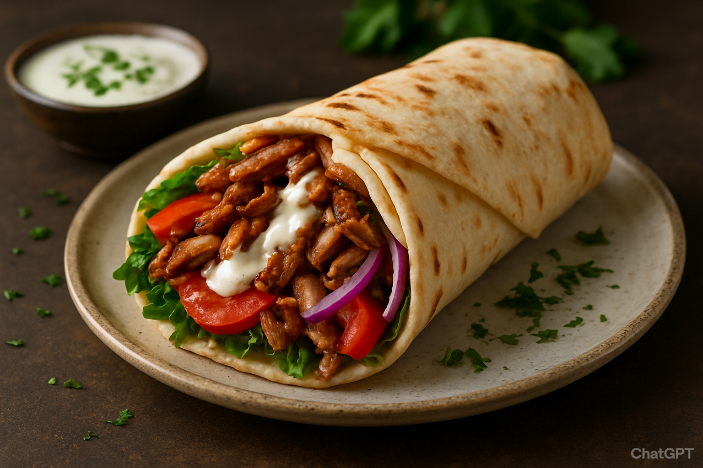

Shawrma

Nothing's like a Shawrma made the right way - The Turkish Way.
Shawarma: Thinly sliced, spiced meat is marinated and cooked until tender and golden.
It’s wrapped in warm flatbread with fresh vegetables, pickles, and a creamy garlic or tahini sauce—bursting with flavor in every bite.
Ingredients
- Chicken, beef, or lamb (thinly sliced)
- Garlic
- Yogurt or olive oil
- Lemon juice
- spice mix (cumin, paprika, coriander, turmeric, cinnamon, black pepper, cayenne)
- Salt
- pita or flatbread
- Lettuce or Cabbage
- Cucumbers
- pickles
- Onions
- Garlic Sauce, Tahini, or hot sauce
- Tomatoes(if you want to , i don't)
Steps
- Marinate the Meat: Slice your choice of meat thinly. Mix with garlic, yogurt or oil, lemon juice, salt, and shawarma spices. Let it marinate for at least 1–2 hours (overnight is best).
- Cook the Meat: Heat a skillet, grill, or oven. Cook the marinated meat until it’s browned, juicy, and cooked through.
- Prepare the Wrap: Warm your pita or flatbread.
- Assemble: Layer the cooked meat on the bread. Add fresh veggies like lettuce, tomatoes, cucumbers, onions, and pickles.
- Roll & Serve: Roll the flatbread tightly around the filling and serve hot.
- Add Sauce: Drizzle garlic sauce, tahini, or hot sauce on top.
Home